Hardware Solutions
Procesadores
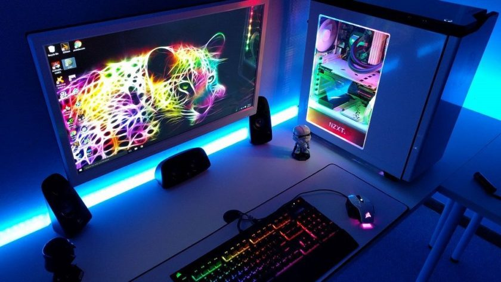Procesadores Intel
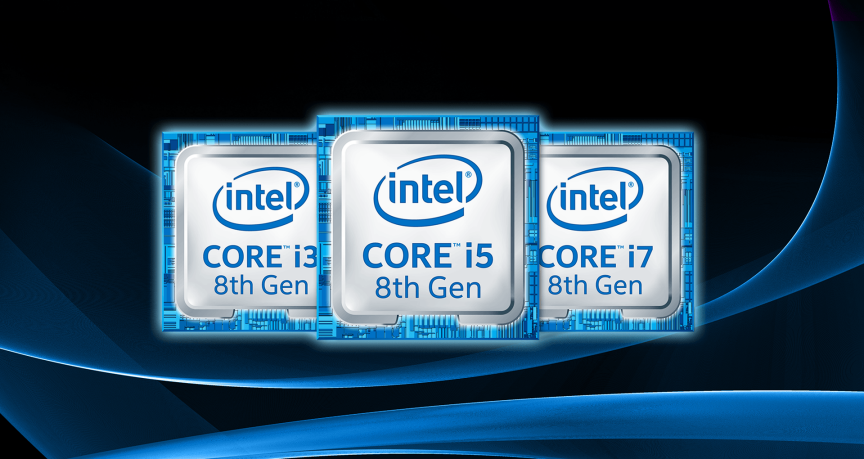Uno de los principales proveedores de procesadores para computadoras es intel, y es reconocido gracias a su gran variedad de procesadores que hay en el mercado. De clic en los siguientes enlaces para ir a la página de Intel.
Procesadores AMD
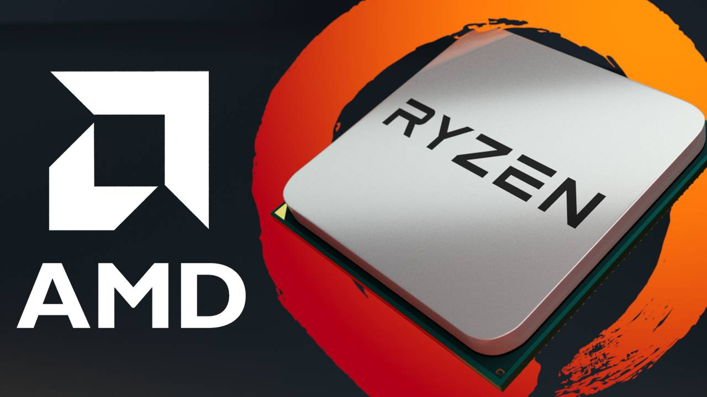AMD es una marca de procesadores. Estos procesadores son reconocidos por ser buenos en los videojuegos y por su gran potencia. Da clic en los siguientes enlaces para ir a la página de AMD.
Procesadores AMD ryzen.Procesadores AMD Athlon y Serie A.
Procesadores A Threadipper.
Tarjetas Gráficas
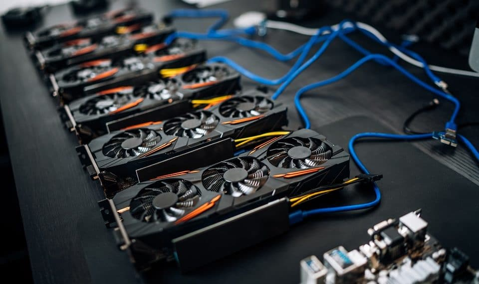Tarjetas Graficas Nvidia

Es la madre de las tarjetas gráficas, esta marca posee las tarjeetas gráficas más potentesdel mercado. Da clic en el enlace para ir a la página de Nvidia.
Tarjetas Gráficas AMD
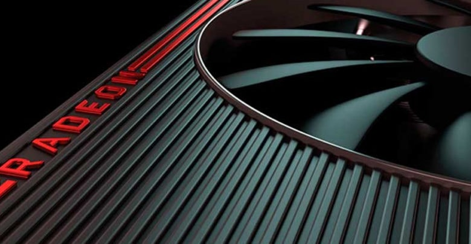Una de las marcas de tarjetas gráficas más potentes, es una submarca especializada en tarjetas graficas de la conocida AMD . Da clic en el enlace para ir a la página de Radeon.
Discos Duros
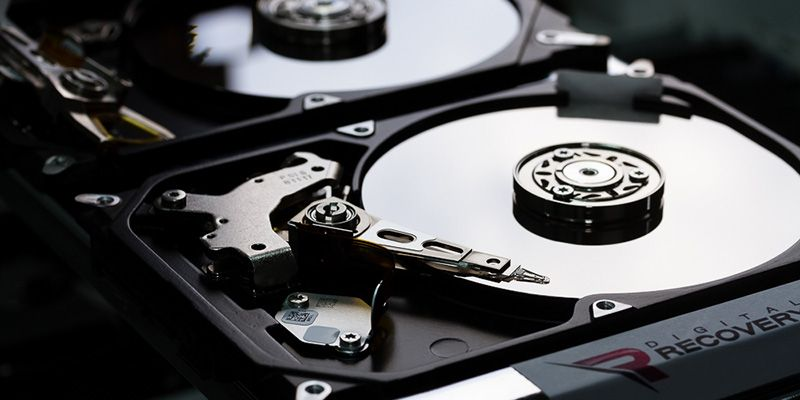Discos Duros Mecánicos
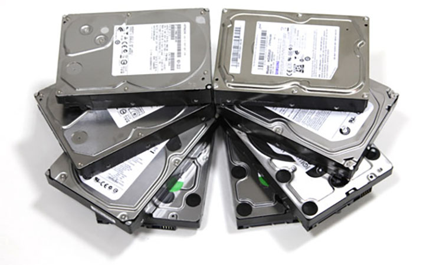Estos discos son los más usados en los ordenadores de escritorio, ya que estos pueden almacenar gran cantidad de datos gracias a su capacidad de almacenamiento hasta 20TB. Estos discos se caracterizan por estar formados por piezas mecánicas y funcionar con magnetismo.
Discos Duros Sólidos
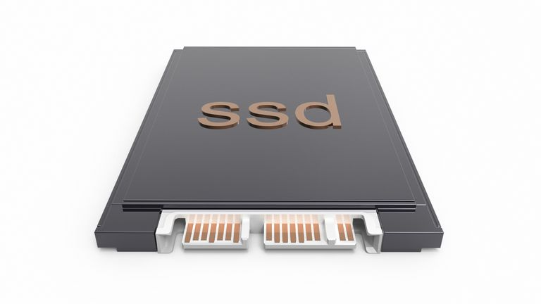Este es un tipo de disco duro diferente al magnético, la principal diferencia es que no está compuesto con piezas mecánicas, sino con microchips, estos son mucho más rápido que un disco duro mecánico y son más resistentes. En si es una evolución de las memorias USB.
Memorias RAM
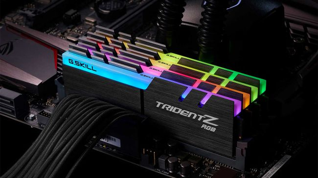Memorias Kingston.
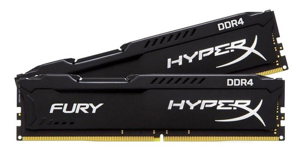Las memorias kingston son una de las marcas de memorias RAM más conocida en el mercado tecnológico ya que este es el encargado de crear memorias tipo pendrive, memorias SD, Discos sólidos, pero en este caso, la mayor demanda en los ordenadores son las memorias RAM, ya que estas son muy utulizadas en los ordenadores potentes, gracias a su rendimiento y velocidad de ejecución. Aquí dejaremos los enlaces para que puedas visitar la pagina de Kingston.
Memorias RAM Kingston.Memorias Adata
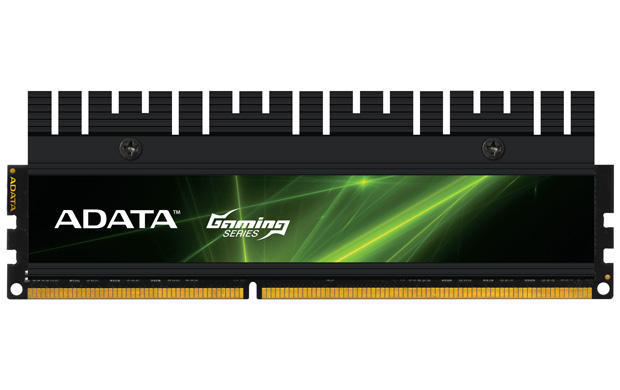Adata es una marca que no se queda atrás ya que es una marca de memorias que posee una buena reputación en sus productos, ya que estos son de buena calidad, también se especializa en la creación discos duros, pendrives y memorias SD, es un buen contrincante para kingston, ya que estas memorias son potentes y económicas. Estas memorias poseen un buen rendimient a la hora de ejecutar programas o juegos. A continuación dejaremos los links de la página oficial de adata.
Memorias RAM Adata